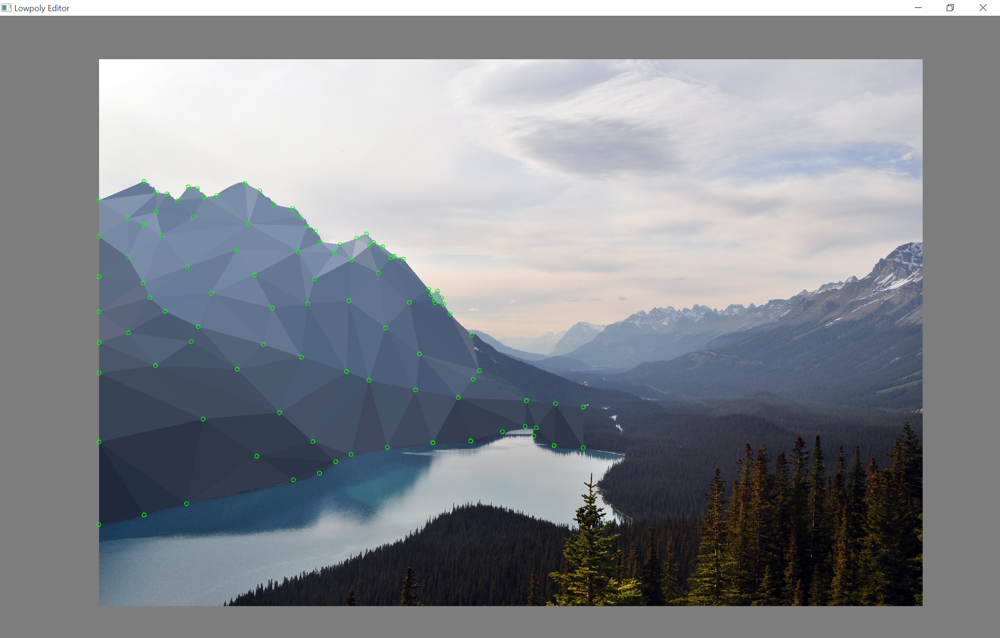

polyedit
2D lowpoly editor heavily based on this one

Download
Direct link
Releases page
Controls
Controls are very similar to the editor it's based on, with a few changes.
Panning works without a mouse.
- Mouse controls
- Left click: Place point/select point
- Right click: Select polygon with center nearest to mouse
- Middle (scrollwheel) click: Pan camera
- Keyboard controls
- S: Save image
- Camera
- LControl: Identical to middle mouse - pan camera while held
- Arrow keys: Move camera
- +/-: Zoom
- Editor toggles
- W: Wireframe mode, only show colored outlines
- H: Hide/show background image
- X: Hide/show polygon centers (useful for seeing density/distribution and easier selection)
- P: Hide/show polygon points
- Selection tools
- Delete: Delete selection
- Space: Clear selection
- Coloring tools
- A: Reaverage polygon color (useful for small changes that keep the same general color but add slight change)
- O: Change polygon color to color at mouse point
- C: Open color picker to select color
- Overlapping
- Comma: Send selection to back
- Period: Send selection to front
Notes
- Images are automatically saved on exit.
- Resizing is supported and should work but occasionally glitches. Restarting fixes it.
- Any point outside the boundary has the color of the closest in-image-boundary point - this means that triangles with points outside the image bounds should get correct colors.
- Saving pushes all out-of-bounds points inbound. This ensures the image doesn't have a white cut in border when converting it to a raster format.
- The editor only recognizes the vertices file if it is in the same directory as the image with the same name.
Repository
https://github.com/shbaldw/polyedit/
License
MIT License.
Libraries
This project uses:
Building
In VS2013/2015 (untested on anything else) the build must be set to "Release" instead of "Debug".
The project looks for libraries to link against in the /include/ and /lib/ directories. Include and lib are in the repo for VS2013 - if you have any other compiler, drop the SFML and jsoncpp include directories in the project's include directories, and do the same for the lib, and it should compile; make sure to switch the dlls out as well.
It has been tested on VS2013 and VS2015 - just switch out the libs/dlls for the corresponding ones for your compiler.
It theoretically should work on all platforms, however it's only been tested on windows.